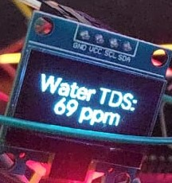

J.A.R.V.I.S.
In a world of so many options for chatbots, why are physical voice assistants still so limited? Even for the famous LLMs, their voice features are often locked behind paywalls, so why not combine some of Google Cloud's (limited) free API access with a physical body, along with some programming, so you can have your very own J.A.R.V.I.S.
Hardware:
The Hardware consists of an ESP32, a simple tactile switch, a 4 Ohm 3 Watt speaker, SPH0645 I2S digital Microphone and a MAX98357A Audio Amplifier Module.
Software:
This project takes advantage of Google Cloud's API, which have very generous free monthly limits, with the biggest constraint being 60 minutes of speech to text a month, with the TTS and Gemini API's being virtually infinite for our use case. There are 2 scripts for this project, the first is a Python script that simply is the middleman connecting all the API's with the ESP32's inputs and outputs. The main file is a .ino file, this file utilises the I2S protocol for the audio and interacts with both the speaker and microphone under the same pins, it waits for a button press to start recording and then allows for 4 seconds of speech to be sent to the STT API, the ouput of that is then sent to the Gemini API and then to a TTS API which is then played out of the speaker.
Challenges:
A particular challenge was the limited RAM of the ESP32, I had to limit the recording to 4 seconds as that by itself used 1/4 of its ram and anything above that failed to work, I also had to add delays on startup and before sending the data over to the API or else the ESP32 would get overwhelmed and parts of the code would get skipped.
Potential Future Changes:
The hardware for this project is almost perfect, the microphone and API have been faultless in their STT capabilities, and the speaker provides a clean output, however, the main bottleneck of the MCU, in the future, I could use something with more RAM, or something I found online called PSRAM (my ESP32 unfortunately didn't have it). An enclosure would also tie together the project; however, I haven't committed to anything yet, as I am still unsure about my current MCU.
Audio Mixer
Windows 10 made it (relatively) easy to access the sound mixer, but it's just too many clicks in Windows 11, and to be honest, not that satisfying, so why not make and 3d print your own?
Hardware:
The hardware for this project was quite simple to work out as this is made using the open source Deej project and I was able to see what different people used, I found this particular implementation that caught my eye however, it required ordering potentiometers from a chinese website that had a very shady english translation, however after a long month of waiting I was able to get 5 10k Ohm slider potentiometers as I desired. After that, all I needed was an Arduino Nano and the hardware was sorted
Software:
The software required configuring the open source Deej application for my specific use case. I programmed each slider to respond to a certain application and adjusted it to the COM port
Challenges:
This was my first time working with stranded wire, as I usually work solid core wire, so I had to learn how to tin the wire and braid multiple wires together, which I had to do for the power wires. I also learnt how to work with heat shrinks and brass hot melts, which included a 3D print prototype that had to unfortunately be sacrified due to a soldering iron hole.
Potential Future Changes
This is one of the projects I have used most since I got it, and I have to say there is nothing I would really change about it. Perhaps adding small icons at the bottom of each slider with the application logo would be useful for someone trying to use my computer.

Hololgram-like Clock
A real-time holographic-like projection onto a plexiglass clock with a custom-made 3D printed Chassis and buttons to adjust the settings
Hardware:
This circuit uses a MAX7219 Dot Matrix Module, an Arduino Nano, a DS3231 precision RTC module and 2 momentary push buttons. The parts list for this project was loosely inspired by a project I saw online; however, the RTC module and buttons are different
Software:
The software was mostly written by the same creator; however, I found that it simply didn't work with my configuration, so I had to rewrite a lot of it. The RTC I used was more power efficient then the one they listed however it was not compatible with a lot of the code so I had to go in and rewrite a lot of it, the code also had issues with the power draw being too high on startup and the Matrix shutting down so I had to tailor in delays at key points to allow for the startup to be perfect everytime. The software itself has multiple features such as a mode that shows the date, the ability to write the time in words and to add seconds onto the display and the buttons can be used to adjust the time and cycle through settings.
Challenges:
Though I did have help in the hardware and software department, the chassis needed to be completely designed by me as the creator provided no clues, Using online dimensions for the matrix I picked a piece of Plexi glass that best complimented its dimensions, I also designed a holder for the matrix module that had studs at the bottom that slotted into the grooves inside the case to make its distance adjustable while staying parallel to change the size of the text on the screen. I also added space on the backside of the holder for the Arduino and RTC module to be hidden away, and had to generally use estimation work to make sure all the components tied together nicely.
Potential Future Improvements:
This is another project that I use all the time, it particularly has that hologram effect if a dark surface is behind i,t and it is placed in such a way that you have to look up to see it (I plan on placing it on my black background shelves in uni). I could potentially add a dark backboard behind it, but while 3D modelling, I couldn't find a way to do it without it appearing ugly, so I relied on placing it in such a spot that the background is darker. While working on this I was gifted a giant 64x16 LED Matrix that is 50cm x 12.5cm big, I am thinking of using the skills I learnt from this to create a giant notification board; however, I need a much larger power source for it, so I am unable to work on it right now.
Remote Start Finger
I really like my M1 MacBook Air, it has the best battery life I have ever seen on a laptop and is completely silent as it is passively cooled; however, due to being an engineering student, I often need a Windows PC to run many software programs I use. I am fortunate enough to have a PC at home that I can remote into, but sometimes forget to boot it up before I leave for uni so why not attach a simple attachment to a servo motor to press the on button for me?
Hardware:
The hardware consists of only an SG90 servo motor with a custom 3D printed 90-degree attachment and an ESP32.
Software:
I use a website to press on a "Power Button" that sends a signal to the Adafruit IO API to send a signal to my ESP32 to turn on the motor to turn on/off my PC. I hosted my Website using GitHub Pages and had to use Render for my backend. This required Arduino IDE and learning about API's and web development, as it was a multi-tool approach.
Challenges:
I coded a simple website that just sends a signal to my API and then turns on my pc with a password required to access the button however as I was hosting it on github pages I realised without a backend my API key and password would be exposed to bad actors who could take advantage so I had to learn how to create a backend to protect my API key and password to add security so only I could turn my computer on and off.
Potential Future Improvements:
The task itself is quite simple, so I don't see much room for improvement; however, I have had the thought of 3D printing an actual finger instead of my attachment to add to the aesthetic. However, I currently do not have access to a 3D printer, so I shall have to wait.

Hydroponic System
As part of an ongoing project aiming to incorporate several sensors for an IoT system, I integrated a variety of sensors into Home Assistant with an ESP32 and OLED Screen, with the option to view and track the data online.
Hardware:
It currently consists of the DHT11 temperature and humidity sensor, a TDS sensor, an air quality sensor, an ESP32 and a 0.96-inch OLED screen to display readings, and it is wirelessly connected to a Home Assistant Green, which hosts the server for all the Home Assistant devices in the house.
Software:
The software for this was written on the ESPHome addon for Home Assistant. As such, programmed in its own stylised way, it takes readings every 5 seconds and displays the data along with the network connectivity (for troubleshooting purposes) on the OLED screen and then sends it back to the home assistant green server, which stores the data for monitoring purposes.
Challenges:
The way code is written on ESPHome is quite different to Arduino IDE, so it requires some learning, although it is quite a bit simpler than Arduino IDE once you learn it. I also had to learn how to set up a virtual machine for this project to run it locally first, before setting up the Home Assistant green.
Potential Future Improvements:
I am currently helping work on a more complete hydroponic system, which could include: the sensors described above, an Ultrasonic Water meter, a light meter and a water pH meter. The project is still in its beginning stage, some of the sensors mentioned have been ordered and some might be removed however the plan is to have as much data as possible being recorded around the house and in the garden and to manage it all on a home assistant, 3D models can also be printed for all these sensors however since a lot of them are not meant to be seen they can simply be taped to the back of something.
Ongoing Projects

Custom Wireless Mouse
The Mission Objective for this project is to make a 3D printed, wireless mouse with a high-end PMW3360 sensor and have a 2000 mAH battery for long battery life. I have also 3D printed a very low-weight and easily accessible case; however, the idea is that the case is swappable
Hardware:
It would use a PMW3360 breakoutboard, an NRF52840 MCU which has good charging and Bluetooth capabilities, a scroll wheel encoded salvaged from a broken mouse, a 2000 mAH lithium ion battery and mouse micro switches
Software:
I plan on using Zephyr OS or ZMK to configure the mouse sensor; they are not very beginner-friendly friendly so this will be a huge undertaking, especially because Pixart (the maker of the sensor) really don't like community-made projects with their sensors for some reason and therefore has not made it accessible at all.
Roadblock:
The NRF52840 MCU I ordered is faulty, and no matter what I try, I am not able to upload firmware onto it. I believe this might be my fault as I had an issue with the solder when soldering the header pins and solder went everywhere it shouldn't...